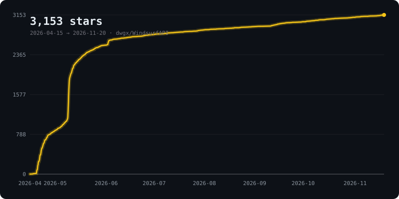

WindsurfAPI / DevinAPI
项目史与证据账本
追踪从首个提交到当前公开快照的代码演进、社区协作与发布。每项记录可回到原始来源。
2026-04-09 · GitHub / Git
开发历程
通过有出处的里程碑回看工程变化。日期以 UTC 表示。
查找记录
按编号、标题、tag、SHA 或作者筛选。提交按 committer 时间排列，作者时间在详情中独立显示。
贡献
按公开 GitHub 角色记录贡献。PR 作者、合并操作者、Issue 作者、评审分别统计。
旧可视账本 · 截至 2026-09-15
月度提交节奏
4 月成型冲刺（339）· 5 月停滞深水（98）· 6 月换轨（141）· 7-8 月高速期（328/412）· 9 月收口（69）—— 悬停柱子看详情，点击锁定可点链接
每周脉搏
W17（04-21 前后）提交洪峰 229 条 · W20-W21（5 月中旬）空窗 · W32（08-04）爆发 247 条 · W37 审计收口 34 条
提交类型构成
fix 占 40% —— 这个项目修 bug 的时间比写功能多
单日峰值 Top 10
08-04 单日 81 条（v3.9.10→v3.9.14 五连发）· 全史最短发版间隔 08-05 v3.9.16→v3.9.17 仅 14 分 49 秒
一天 24 小时
凌晨 2 点还在提交 —— 该项目没有作息表
版本节奏
196 个 tag：4-5 月 52/52 个（每日一版），8 月 22 个（v3.9.8→v3.9.29），9 月 5 个（v3.9.30→v3.9.34）
四个阶段
从脚本到网关的演化轨迹
成型期04-09 ~ 04-30单机脚本→完整网关 · issue 洪峰 82 个 · 98% 解决率 · 单日最高 53 条
深水区05-01 ~ 06-05工具兼容/上下文/粘性会话 · 中旬 8 天空窗（离线研究）· #115 六天四稿
换轨期06-05 ~ 06-30Cascade bridge 爆发 → devin-connect 桥 24 小时诞生 · 探针烧账户事故
高速期07-01 ~ 09-15v3.0-v3.9.34 密集发布 · 对抗 review 文化 · OTA 跟 tag · 审计收口
贡献者分析
34 位外部贡献者 · 8 位多次贡献者（2+ PR）· 26 位单发过客 —— 悬停排行看详情，点击锁定
1387 提交 · 66 个合并 · 主干采样节点 —— 悬停节点/线段看详情，点击锁定
自伤与返工（29 起，按时间）
红 = 事故级（烧钱/安全/生产挂）· 橙 = 合并后自毁/返工 · 悬停节点看详情（AI 总结 + 账本/Git 链接），点击锁定浮窗
ESC 切换纯净字幕视图
Star History
2,996 星 · 五个月从 0 到近三千 —— 每天都有新面孔点下那颗星
